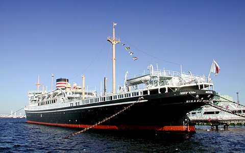

あなたにおすすめの旅行先は...
山下公園です
場所
・山下公園
1930年(昭和5年)3月に開園した公園です。関東大震災のがれきを埋め立てて作られました。海への眺望、記念碑や歌碑など見どころの多い公園です。横浜ベイブリッジや港を行き交う船の眺めがロマンチック。童謡で馴染みの深い「赤い靴はいてた女の子」像や、在日インド人協会から昭和12年に寄贈された「インド水塔」、姉妹都市であるアメリカ・サンディエゴ市寄贈の「水の守護神」など、海外との豊かな交流を感じさせる記念碑が多いことでも有名です。

・日本郵船氷川丸
氷川丸は日本郵船が1930 年にシアトル航路用に建造した貨客船です。 当時最新鋭の船として竣工しました。戦争中は海軍特設病院船となり、終戦までに3回も触雷しましたが沈没を免れ、戦後は貨客船に戻り1953年にシアトル航路に復帰。船齢30年に達し第一線を退くまでに、太平洋横断254回、船客数は2万5千余名と、活躍しました。